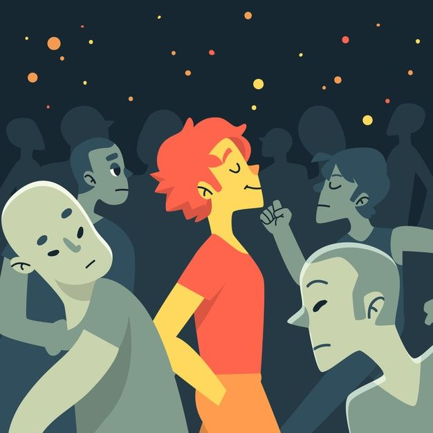

La felicidad puede ser vista como un estado de equilibrio y armonía entre las diferentes dimensiones de la vida de una persona. Esto implica no solo sentir placer y satisfacción en el momento presente, sino también tener un sentido de propósito y significado en la vida a largo plazo.
Desde esta perspectiva, la felicidad no se limita a la búsqueda de placeres momentáneos, sino que también involucra la construcción de relaciones significativas, el logro de metas personales y el cultivo de emociones positivas como la gratitud y la compasión.
Además, la felicidad puede entenderse como un proceso dinámico en lugar de un estado estático. Esto significa que está influenciada por una variedad de factores, como las circunstancias externas, las relaciones interpersonales, el estado de salud y bienestar, así como por la forma en que una persona percibe y responde a estos factores.
En resumen, la felicidad puede ser vista como un equilibrio dinámico entre el bienestar emocional, la realización personal y el sentido de propósito en la vida. En lugar de ser un destino final, es un viaje continuo que implica crecimiento, aprendizaje y adaptación a lo largo del tiempo.